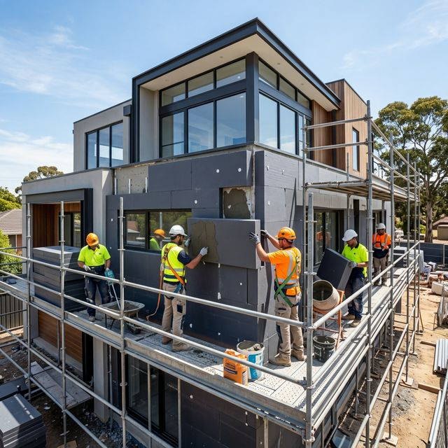

Termosistem & Fațade
Redu facturile la energie cu până la 40%. Folosim materiale de ultimă generație precum polistirenul grafitat și vata bazaltică pentru o izolarea perfectă.

Eficiență Energetică A+
Execuție rapidă cu echipă proprie și schelă autorizată.
De ce să ne alegi pentru fațada ta?
- check
Sistem Complet
Gestionăm totul, de la schelă la tencuiala decorativă finală.
- check
Fără Punți Termice
Atenție sporită la detalii pentru a elimina pierderile de căldură la ferestre și colțuri.
- check
Garanție Extinsă
Oferim garanție scrisă atât pentru materiale cât și pentru manopera executată.
Solicită o ofertă personalizată
Trimite-ne planul casei tale sau solicită o vizionare gratuită pe șantier pentru un deviz exact.
Contactează-ne